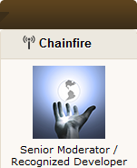

Samsung Galaxy S2 Root Guide
-
Chainfire's CF-Root
Click below on Chainfire's logo to go to:
Chainfire's CF-Root page on XDA Developers
 This rooted kernel is for the "rooting beginners"
and those who want to keep as close to stock as possible.
CF-Root takes the kernel from an original Samsung firmware,
and just adds Root, Busybox, and ClockWorkMod recovery